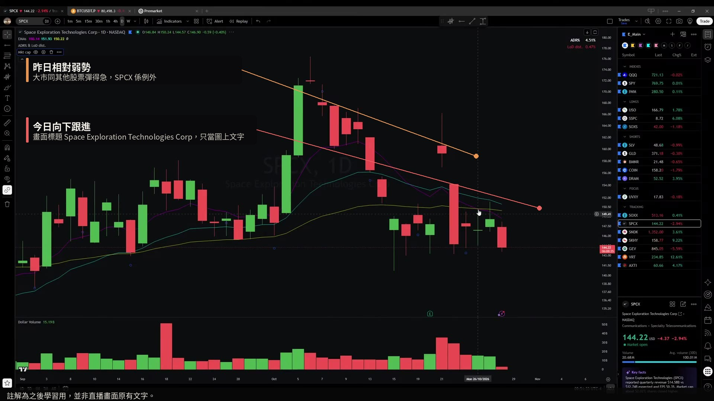
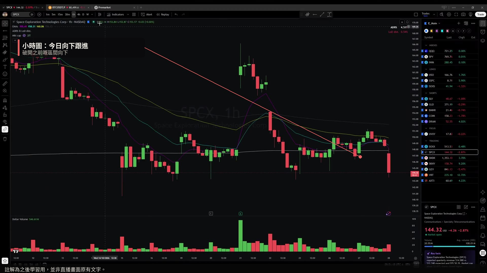
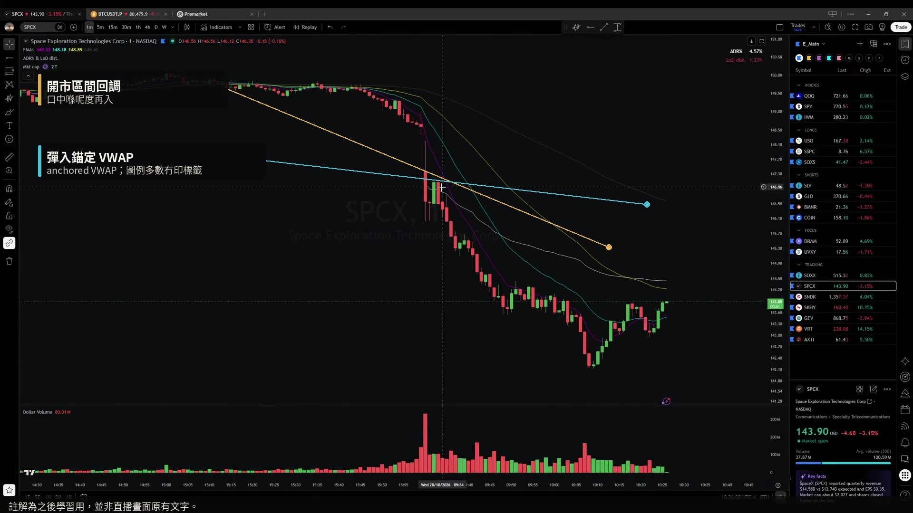

概要
大市強嘅時候，相對弱勢先成為例外
30:08 佢話 SpaceX 今日亦有向下跟進。昨日其實都可以入場，但因為淡倉已經太多、大市又強，所以打得防守啲。SPCX 係昨日嘅例外，展現相對弱勢，其他股票則彈得急。約 1:04:27 回應觀眾：自己昨日亦被停，再入係在開市區間回調入錨定 VWAP；希望可以跟進。由八月底起，SPCX 大約有十次連輸。
畫面標題寫住 Space Exploration Technologies Corp，只當圖上文字。錨定 VWAP 多數冇印標籤，位置以口中同畫面線條一齊讀。
圖一
昨日相對弱勢，今日向下跟進
直播 30:30

原話
SpaceX is also getting some follow through to the downside today. Yesterday it also could be an entry, but I tried to play a little bit defensive yesterday because I got too many shorts and yesterday the market is pretty strong. SpaceX is the exception, which shows some type of relative weakness yesterday. All other stocks are bouncing pretty strongly yesterday.
SpaceX 今日亦有向下跟進。昨日其實都可以係一個入場，但我昨日打得防守啲，因為淡倉已經太多，而且昨日大市頗強。SpaceX 係例外，昨日展現某啲相對弱勢。其他股票昨日都彈得幾急。
點樣讀
相對弱勢要對住大市嚟讀：別的彈、佢唔跟，先成為例外。
昨日可以入但選擇防守，係倉位已經太多，唔係否定位置。畫面標題只當圖上文字。
圖二
小時圖見到今日向下跟進
直播 30:15

原話
SpaceX is also getting some follow through to the downside today.
SpaceX 今日亦有向下跟進。
點樣讀
小時圖用來看當日跟進：區間之後向下破。
同日線一齊讀，唔好只記住其中一幅。
圖三 · 其後
被停後，在開市區間回調入錨定 VWAP 再入
直播 1:05:05

原話
I also got stopped out from SpaceX yesterday. I reentered it at the opening range pullback into the anchored VWAP. Hopefully we can get some follow through. This SpaceX, I have maybe like a 10 losing streaks on SpaceX, starting from late August.
我昨日都喺 SpaceX 被停。我再入係在開市區間回調入錨定 VWAP。希望可以有啲跟進。呢隻 SpaceX，由八月底開始，我大概有十次連輸。
點樣讀
再入場係有具體位置：開市區間回調，並且行入錨定 VWAP。
連輸次數只係原話回顧，唔好寫成必然繼續輸或者必然翻本。圖例多數冇印 AVWAP 標籤。
附註
注意事項
- 畫面標題 Space Exploration Technologies Corp 只當圖上文字，唔當成企業聲明。
- 畫面睇唔到止蝕價、再入成交價或者連輸嘅實際損益。